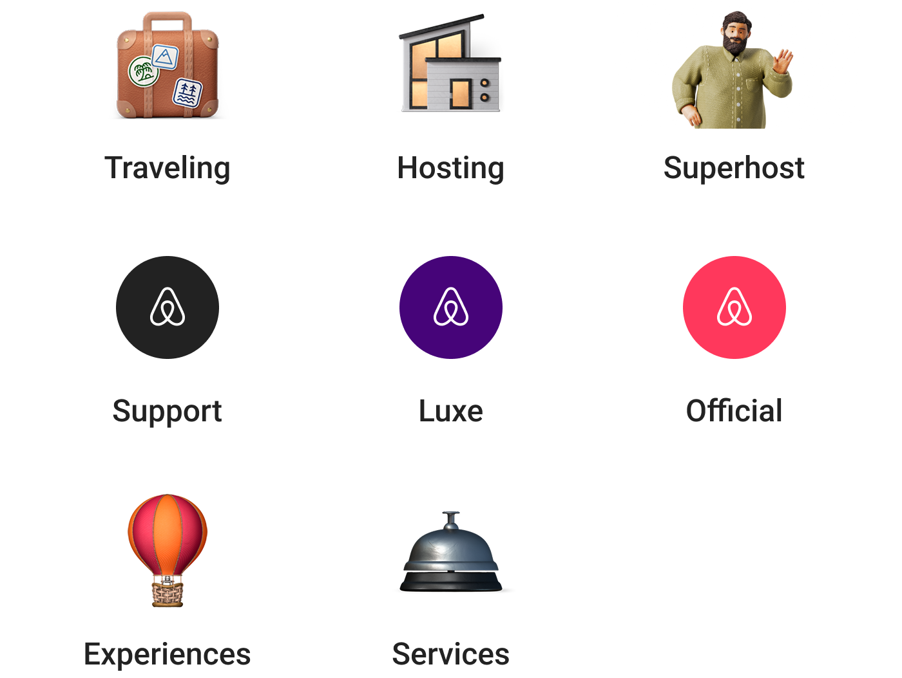

Airbnb Messaging
Airbnb Messaging
Airbnb Messaging
Airbnb Messaging

Every trip on Airbnb begins with a message. Over 3 billion messages sent per year. Messaging is the one surface every Airbnb guest and host passes through, whatever product line brought them there. In 2024, as Airbnb moved beyond Stays into Experiences and Services, that single purpose Messages had to become something larger.
To support Airbnb's vision, as one of the two lead designer of this project, I helped to rebuilt Airbnb Messaging from the ground up, from the core message framework to the features layered on top. culminating in a flagship launch for the 2024 Airbnb Summer Release.

Due to an active NDA, some project details have been generalized.
A host may also be a guest. A booker may also be a co-traveler. One Airbnb user may have many hats, but the legacy messaing system could not hold that. It could not model multiple roles, so Airbnb ran separate Inbox and messaging for different roles happens everywhere.
We've already have supported Traveling (with Booker and Co-travelers), Hosting (with Host and Co-hosts), Superhost, Airbnb Luxe, Airbnb Support, Airbnb Official. With the upcoming Experiences and Services arriving, we were about to hit the ceiling.

Redesign the messaging to make existing messages happen in one place, and scalable for all potential bussiness.
A progressive filter that grows with a person's complexity, not with Airbnb's. Tabs break past five items. Search asks people to know what they want before they look. This sits between the two.
A progressive filter that grows with a person's complexity, not with Airbnb's. Tabs break past five items. Search asks people to know what they want before they look. This sits between the two.
One composer built to expand and contract with what a person needs to say — from a quick reply to a scheduled payment request.

The default state — a single slim bar that keeps focus on the conversation until there's something to send.

A tap grows the bar into a full text field, with the keyboard and formatting tools ready underneath.

Photos, videos, and other rich media attach from the same input, without breaking out into a separate flow.

Long replies or pasted text push the composer to full screen, trading chrome for room to read and revise.

One tap surfaces the shortcuts people reach for most — quick replies, scheduling, payment requests, and refunds.

A built-in picker for sharing a host's own guidebooks and highly rated experiences, pulled straight into the thread.
This project shipped inside an active Airbnb NDA, so real product screens can't be shown publicly. The layout above reflects the actual structure of the work; the imagery has been swapped for placeholders.
I co-led the end-to-end design of the Messaging rebuild, from the core message framework through the features built on top of it, working closely with product, engineering, and trust & safety.
Happy to walk through more of the work directly — reach out via the links on the About page.